Relay Pitching Live Vote

릴레이 피칭 투표불러오는 중… Loading…
Voting will open soon.
Liked the pitch you just heard? Cast your vote.
Your vote has been received. Thank you!
Voting for this pitch is closed.
한 회차에 한 번만 투표할 수 있습니다 · One vote per pitch